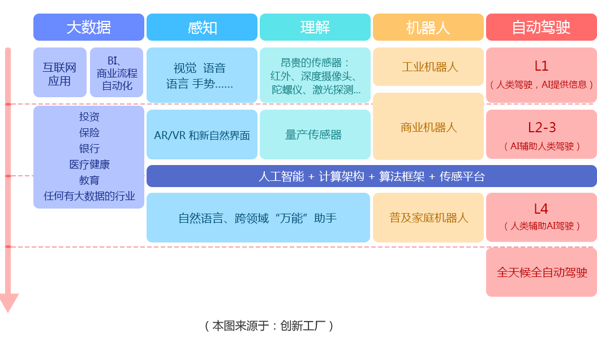

"开启Python人工智能之旅"
Python—人工智能主流语言
Python是人工智能（AI）和数据分析常用语言
Google开源机器学习框架：TensorFlow
开源社区主推学习框架：Scikit-learn
百度开源深度学习框架：Paddle
... ...
以上框架，均是由Python语言开发。
不仅如此，Python还含有优质的文档、丰富的AI库、机器学习库、自然语言和文本处理库。尤其是Python中的机器学习，实现了人工智能领域中大量的需求。
人工智能时代来临 规模将持续增长
- 政策：在《国务院关于积极推进“互联网+”行动的指导意见》中被推上国家战略层面
- 经济：互联网经济持续增长，2015年中国网络经济增长约33%，规模超千亿，人工智能创业公司共获得投资资金12.6亿。
- 社会：我国科研投入占GDP20%，仅次于美国，信息技术投入占“863计划”15.5%，是国家重点投资领域。 近五年科研人员保持20%的增长，给行业带来人才红利。
- 技术：目前在视觉识别、语音识别等领域率先技术突破，处于国际领先水平。
人工智能未来蓝图
